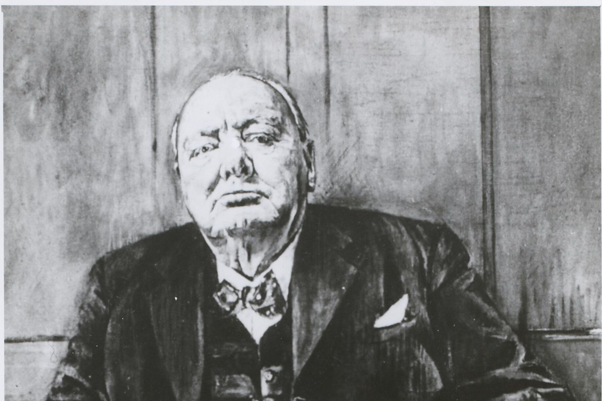

Вы достигли высот, но с каждым днем чувствуете, что поговорить по-настоящему не с кем? Партнеры ждут решений, команда — указаний, а семья — внимания. В этой статье разберем, почему одиночество наверху — это профессиональная болезнь лидеров, и как найти ту самую безопасную опору, не потеряв авторитет.
«Одиночество — это не отсутствие людей вокруг. Это отсутствие тех, с кем можно быть настоящим».
— Карл Густав Юнг
Содержание статьи
Синдром «железного босса»
Внешне вы — лидер, который всё контролирует. Вы привыкли нести ответственность за других: за бизнес, за команду, за решения, которые влияют на миллионы. Но эта же роль накладывает жесткие ограничения.
Вы не можете пожаловаться подчиненным — это подорвет ваш авторитет. Вы не хотите грузить семью — они и так переживают. А друзья, которые не вращаются в бизнес-среде, просто не понимают масштаба вашей ответственности.
И в итоге вы остаетесь один на один с самым тяжелым грузом — собственными мыслями и сомнениями. Вы носите маску «железного босса», за которой скрывается обычный человек, которому тоже бывает страшно, больно и одиноко.
Я вижу это в практике постоянно. Чем выше человек поднимается по карьерной лестнице, тем меньше людей рядом, с которыми он может говорить на равных.
Почему успешные люди чувствуют себя одинокими
Психологи называют это «парадоксом власти». Когда человек получает власть и высокий статус, его социальный круг сужается. Исследования показывают, что люди с высоким статусом склонны к более сильной изоляции, потому что:
- Страх уязвимости. Признать, что ты не справляешься — значит, поставить под сомнение свою компетентность.
- Отсутствие равных. С подчиненными нельзя быть на равных, а с другими лидерами — часто идет конкуренция.
- Ожидания других. Окружающие видят в вас только функцию (того, кто решает проблемы), а не живого человека.
Это не слабость. Это системная особенность, с которой сталкиваются почти все руководители.
Исторический пример: цена одиночества Черчилля
Уинстон Черчилль — человек, который привел Великобританию к победе во Второй мировой войне. Он был лидером нации, его слушали миллионы, его цитируют до сих пор. Но он был невероятно одинок.

Он всю жизнь боролся с депрессией, которую называл «черным псом». И когда мир рушился, рядом с ним не было людей, которые могли бы поддержать его по-настоящему. Близкие умирали, политические союзники предавали, а на его плечах лежала тяжесть судьбы целой Европы.
Он был гением, который видел угрозу раньше других. И эта способность видеть дальше и глубже остальных обрекала его на изоляцию. Изоляцию, которую он заполнял работой, алкоголем и парадоксальным чувством юмора.
Черчилль не позволил одиночеству остановить его. Но оно было его постоянным спутником. И его история — лучшее доказательство того, что высота не спасает от чувства «не с кем поговорить».
Что говорит наука о лидерах-одиночках
Одиночество — это не просто эмоция. Это состояние, которое влияет на мозг, тело и бизнес-решения.
Ученые из Гарвардской школы бизнеса провели масштабное исследование, которое показало: лидеры, испытывающие одиночество, хуже принимают решения. Это происходит потому, что изоляция нарушает эмпатию и критическое мышление. Человеку в изоляции становится сложнее видеть альтернативные точки зрения — он либо замыкается в собственных иллюзиях, либо погружается в тревогу.
Кроме того, исследования показали, что одиночество ускоряет когнитивное старение и увеличивает риск деменции, потому что мозг перестает получать «социальную стимуляцию», которая помогает ему оставаться гибким.
И это отражается на бизнесе. Тот, кто долго находится в изоляции, теряет связь с реальностью, не может объективно оценивать риски и не замечает собственного выгорания.
Из моей практики: «Мне не с кем поговорить»
В моей практике карьерного психолога это одна из самых сложных и деликатных тем. Ко мне приходят люди, которые выглядят как «скала» для своей команды, но сами находятся на грани выгорания.
Один из показательных случаев: клиент, собственник крупного бизнеса, пришел с запросом «хочу масштабироваться». Но на второй встрече, когда мы копнули глубже, он сказал фразу, которая все перевернула: «Мне не с кем поговорить».
У него были партнеры, топ-менеджеры, жена и дети. Но обсуждать с ними свои реальные страхи — страх потерять бизнес, страх не оправдать ожидания, страх, что он просто устал — он не мог. Он боялся, что если признается в слабости, то потеряет их уважение.
Когда мы начали разбирать это состояние, выяснилось, что он уже несколько лет жил с ощущением, что «все держится только на нем». И он подсознательно избегал отдыха, потому что боялся, что в его отсутствие всё развалится. В итоге он оказался в ловушке собственной силы.
Наша работа началась не с бизнес-плана, а с создания безопасного пространства. Мы работали на двух уровнях: снимали психологический блок и параллельно выстраивали новую архитектуру делегирования. Он перестал быть «узким горлышком» и смог выдохнуть. И это дало ему силы не только пережить кризис, но и выстроить бизнес по-новому.
Что делать, если вы чувствуете изоляцию
Речь не о том, чтобы стать «душой компании» или рассказывать всем о своих проблемах. Речь о том, чтобы найти ту самую опору, которая не пошатнет ваш авторитет, но вернет вам объективность и силы.
Признать, что так больше нельзя
Первое — признать, что одиночество наверху — это не признак слабости, а профессиональный риск. Вы не обязаны справляться в одиночку. Это нормально — искать безопасное пространство для разговора.
Найти человека «вне системы»
Вам нужен человек, который не зависит от вас (как сотрудники), не втянут в ваши эмоциональные связи (как семья) и не является вашим конкурентом. Это может быть психолог, коуч или доверенный наставник. Это не просто разговор по душам. Это стратегическая сессия, где вы можете протестировать гипотезы, обсудить риски и посмотреть на бизнес трезвым взглядом, не опасаясь за свой авторитет.
Разделять «я» и «моя работа»
Психологи называют это «децентрацией идентичности»: когда роль руководителя перестает быть единственной линзой, через которую вы видите себя. Ваша должность — это то, что вы делаете, а не то, кто вы есть. И эта мысль освобождает.
Создавать микро-связи
Не обязательно говорить о глобальных проблемах. Начните с малого: обсудите фильм, поделитесь новостью, найдите хобби за пределами бизнеса. Это помогает вспомнить, что жизнь состоит не только из стратегических задач.
Если вы узнали себя в этой статье и чувствуете, что устали нести груз ответственности в одиночку — давайте это изменим. На диагностической встрече мы проведем профессиональный аудит вашей ситуации, выявим точки опоры и выстроим конкретный план действий. Без иллюзий, но с уважением к вашему опыту.
Записаться на диагностикуВывод
Одиночество наверху — это не приговор. Это вызов. И как любой вызов, он требует системного подхода: не бежать от него, не заглушать работой, а находить новых людей, которые помогут увидеть реальность с другой стороны.
Вы не должны быть одиноки только потому, что вы руководитель. Вы имеете право на поддержку. И тот, кто признает это, обретает не слабость, а настоящую силу — силу быть живым и свободным.
Часто задаваемые вопросы
Почему успешные люди чувствуют себя одинокими?
Потому что высокий статус часто означает, что вам не с кем говорить на равных. Подчиненные видят в вас функцию, партнеры — конкурента, а близкие не понимают масштаба ответственности. Это системная изоляция, а не личная несостоятельность.
Одиночество и уединение — в чем разница?
Уединение — это добровольный выбор, когда вы остаетесь наедине с собой, чтобы восстановиться. Одиночество — это боль от отсутствия связи. Одиночество разрушает, уединение — восстанавливает.
Как руководителю справиться с одиночеством, не показывая слабость?
Вам не нужно показывать слабость команде. Вам нужно найти безопасное пространство «вне системы»: психолога, наставника или человека, который не зависит от ваших решений. Там можно быть честным без страха потерять авторитет.
Почему одиночество — это не всегда плохо?
Здоровая самодостаточность — это когда вы чувствуете себя комфортно наедине с собой. Одиночество — это когда вы даже в окружении людей чувствуете пустоту. Важно различать эти состояния, чтобы не путать потребность в отдыхе с изоляцией.
Как понять, что пора обратиться к психологу (а не просто взять отпуск)?
Если изоляция длится месяцами и начинает влиять на ваши решения, сон или отношения с близкими — это сигнал. Отпуск не решит проблему, если корень в том, как вы выстроили свою жизнь и границы.